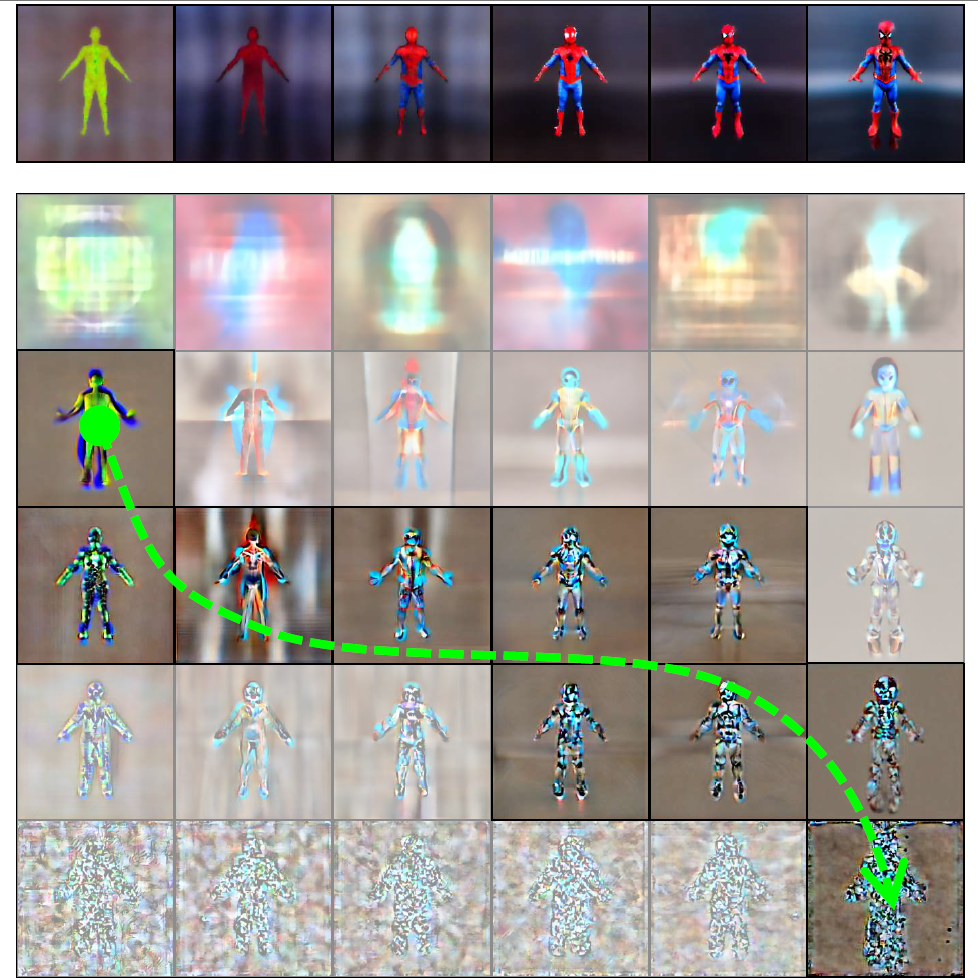

|
Research
My research centers on computer vision, graphics, and machine learning, including 3D and video generation, pedestrian and object recognition, and low-level vision.
I am particularly interested in 3D generation of objects, avatars, and scenes, with the ultimate goal of creating immersive and fantastic digital worlds.
|
|
|
DreamCube: 3D Panorama Generation via Multi-plane Synchronization
Yukun Huang, Yanning Zhou, Jianan Wang, Kaiyi Huang, Xihui Liu
ICCV 2025
project page /
arXiv /
code /
model /
video
RGB-D cubemap generation using pre-trained 2D diffusion and multi-plane synchronized operators, with applications in panoramic depth estimation and 3D scene synthesis.
|
|
DreamWaltz-G: Expressive 3D Gaussian Avatars from Skeleton-Guided 2D Diffusion
Yukun Huang, Jianan Wang, Ailing Zeng, Zheng-Jun Zha, Lei Zhang, Xihui Liu
TPAMI 2025
project page /
arXiv /
code /
model
Expressive full-body 3D avatar generation from 2D diffusion using hybrid 3D Gaussian avatar representation and skeleton-guided score distillation.
|

|
DreamTime: An Improved Optimization Strategy for Diffusion-Guided 3D Generation
Yukun Huang, Jianan Wang, Yukai Shi, Boshi Tang, Xianbiao Qi, Lei Zhang
ICLR 2024
arXiv /
paper
Analyzing the drawbacks of random timestep sampling in score distillation sampling (SDS) and proposing a non-increasing timestep sampling strategy.
|
|
DreamWaltz: Make a Scene with Complex 3D Animatable Avatars
Yukun Huang, Jianan Wang, Ailing Zeng, He Cao, Xianbiao Qi, Yukai Shi, Zheng-Jun Zha, Lei Zhang
NeurIPS 2023
project page /
arXiv /
code /
poster /
gallery
High-quality animatable avatar generation from texts via 3D-consistent occlusion-aware score distillation sampling, ready for 3D scene composition with diverse interactions.
|
|